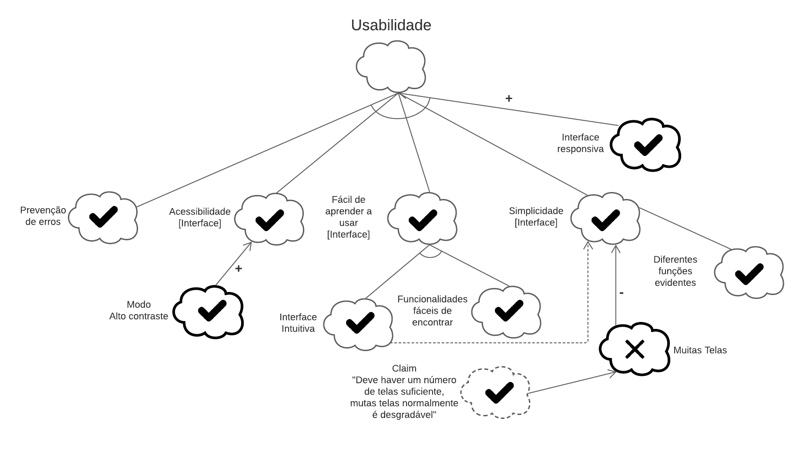
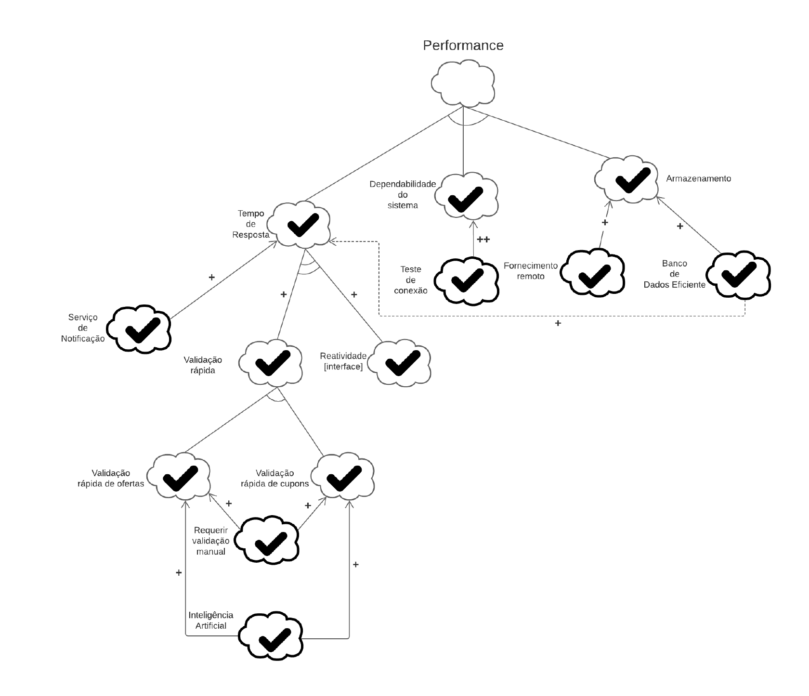
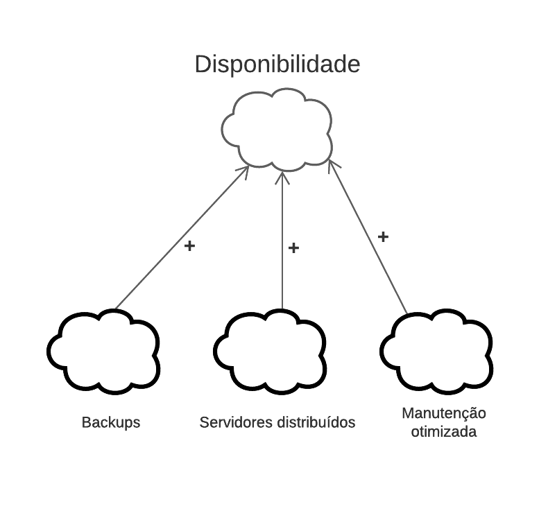

NFR Framework
Introdução
"O NFR Framework é uma abordagem para representar e analisar Requisitos Não-Funcionais. Seu objetivo é ajudar desenvolvedores na implementação de soluções personalizadas, levando em consideração as características do domínio e do sistema em questão. Tais características incluem Requisitos Não-funcionais, Requisitos funcionais, prioridades e carga de trabalho. Esses fatores determinam a escolha de alternativas de desenvolvimento para um determinado sistema (CHUNG et al., 2000)" (SILVA, 2019, p. 30).
Non-Functional-Requirements (NFR)
Legenda

NFRF Geral

NFRF01: Segurança

Propagação

NFRF02: Usabilidade

Propagação

NFRF03: Performance

Propagação

NFRF04: Manutenibilidade

Propagação

NFRF05: Confiabilidade

Propagação

NFRF06: Portabilidade

Propagação

NFRF07: Disponibilidade

Propagação

Referências Bibliográficas
CHUNG, Lawrence; NIXON, Brian. Nixon, YU, Eric; MYLOPOULOS, John. "Non-Functional Requirements in Software Engineering". Springer US, 2000.
SILVA, Reinaldo Antônio da. NFR4ES: Um Catálogo de Requisitos Não-Funcionais para Sistemas Embarcados. 2019
Requisitos Não-Funcionais. UFPE. Disponível em: https://www.cin.ufpe.br/~if716/arquivos20152/experimentoBruno/Aula2/Aula2-Parte2-NFR%20Framework.pdf. Acesso em: 16 de out. de 2020.
NFR Framework. Disponível em: http://jaejaneiro.orgfree.com/engsofnfr.pdf. Acesso em: 16 de out. de 2020.
Versionamento
| Versão | Data | Modificação | Autor |
|---|---|---|---|
| 1.0 | 16/10/2020 | Criação do documento | Todos os integrantes |
| 1.1 | 25/10/2020 | Correção NFRs de segurança e usabilidade | Todos os integrantes |
| 1.2 | 25/10/2020 | Adição de NFR geral | Todos os integrantes |
| 1.3 | 05/11/2020 | Adição da legenda do NFRF | Igor Paiva |